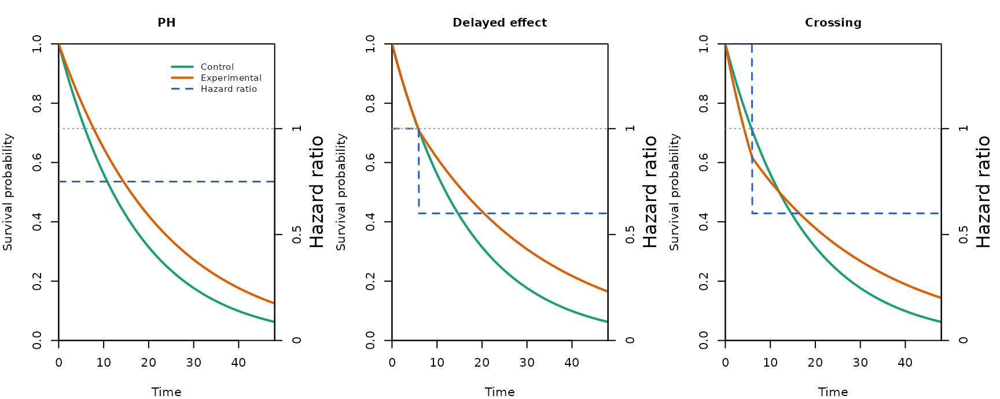
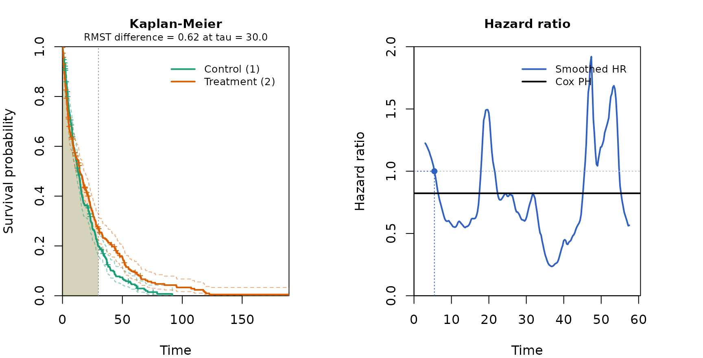

Comparing the log-rank test and RMST under nonproportional hazards
Source:vignettes/compare-logrank-rmst.Rmd
compare-logrank-rmst.RmdThis vignette uses the simulation trio (simdata_fast,
analysis_fast, and simsummary_fast) to compare
the power of the log-rank test and the restricted mean survival time
(RMST) at a single fixed analysis, under three survival patterns:
proportional hazards, a delayed treatment effect, and crossing hazards.
Along the way it shows the two plotting layers of the package, the
design-stage scenario plot from gen_scenario_fast and the
analysis-stage Kaplan-Meier plot from kmcurve_fast.
The log-rank test is the most efficient test when hazards are proportional, but its power can fall under nonproportional hazards because it weights all event times equally. RMST contrasts the area under the survival curves up to a truncation time and summarizes a difference in survival rather than a hazard ratio, so it behaves differently when the treatment effect is concentrated late or reverses over time. The three scenarios below are chosen to make those differences visible at a common sample size.
Design and sample size
The control group has a median survival of 12 months. The sample size
is set so that the proportional-hazards scenario, with a hazard ratio of
0.75, has 90% power at a one-sided 0.025 level. The events are obtained
from the Schoenfeld formula and inflated to a sample size with the
Lachin-Foulkes method through gsDesign::nSurv, given 12
months of accrual, 36 months of minimum follow-up, and a 5% annual
dropout. The same sample size is then applied unchanged to all three
scenarios.
m0 <- 12
lam0 <- log(2) / m0
hr_ph <- 0.75
hr_late <- 0.60
hr_early_cross <- 1.40
delay <- 6
alpha <- 0.025
power_target <- 0.90
accrual <- 12
minfup <- 36
study_dur <- accrual + minfup
dropout_annual <- 0.05
eta <- -log(1 - dropout_annual) / 12
tau <- 30
ns <- gsDesign::nSurv(
lambdaC = lam0, hr = hr_ph, eta = eta,
T = study_dur, minfup = minfup,
alpha = alpha, beta = 1 - power_target, sided = 1, ratio = 1
)
n_per <- ceiling(ns$n / 2)
n <- c(n_per, n_per)
n_total <- sum(n)
a_rate <- n_total / accrual
data.frame(
"Total n" = n_total,
"Per group" = n_per,
"Target events" = round(ns$d),
check.names = FALSE
)
#> Total n Per group Target events
#> 1 616 308 506Scenarios
The control group is exponential throughout. The treatment group differs by scenario. Under proportional hazards the treatment hazard is 0.75 times the control hazard at all times. Under the delayed effect the two groups share the same hazard for the first 6 months and the treatment hazard drops to 0.60 times the control thereafter. Under crossing hazards the treatment group has a higher hazard for the first 6 months and a lower hazard afterwards, so the survival curves cross. The design-stage scenario plot shows the assumed survival curves and the piecewise hazard ratio for each scenario.
scn <- gen_scenario_fast(
scenarios = list(
"PH" = list(
e.hazard = list(lam0, hr_ph * lam0)
),
"Delayed effect" = list(
e.hazard = list(lam0, c(lam0, hr_late * lam0)),
e.time = c(0, delay, Inf)
),
"Crossing" = list(
e.hazard = list(lam0, c(hr_early_cross * lam0, hr_late * lam0)),
e.time = c(0, delay, Inf)
)
),
shared = list(n = n, a.time = c(0, accrual), a.rate = a_rate)
)
plot(scn, tmax = study_dur, mfrow = c(1, 3))
A single simulated trial
Passing each scenario object to simdata_fast generates
the data, here nsim replicates per scenario. The
Kaplan-Meier plot below uses one replicate of the crossing scenario and
adds the smoothed time-varying hazard ratio and the RMST shading up to
the truncation time, which makes the early reversal of the effect
visible in a single realized trial.
scenarios <- scn$scenarios
seeds <- c(101, 102, 103)
power_tab <- data.frame(
Scenario = character(0), LogRank = numeric(0), RMST = numeric(0),
stringsAsFactors = FALSE
)
examples <- vector("list", length(scenarios))
names(examples) <- names(scenarios)
for (i in seq_along(scenarios)) {
s <- scenarios[[i]]
dat <- do.call(
simdata_fast,
c(s$args, list(nsim = nsim, d.hazard = eta, seed = seeds[i]))
)
res <- analysis_fast(
dat, control = 1,
time.looks = study_dur,
stat = c("logrank", "rmst"),
tau = tau, side = 1
)
s_lr <- simsummary_fast(res, p.col = "logrank.p", alpha = alpha)
s_rmst <- simsummary_fast(res, p.col = "rmst.p", alpha = alpha)
power_tab <- rbind(power_tab, data.frame(
Scenario = s$label,
LogRank = s_lr[s_lr$look == "overall", "cum.reject"],
RMST = s_rmst[s_rmst$look == "overall", "cum.reject"],
stringsAsFactors = FALSE
))
examples[[i]] <- dat[dat$sim == 1L, c("tte", "event", "group")]
}
ex <- examples[["Crossing"]]
fit <- kmcurve_fast(ex$tte, ex$event, ex$group, control = 1)
plot(fit, hr = TRUE, rmst = TRUE, tau = tau, bw = 3)
Power comparison
The table reports the simulated power, the proportion of the 10000 replicates in which each test rejects at the one-sided 0.025 level, for each scenario.
knitr::kable(
power_tab, digits = 3,
col.names = c("Scenario", "Log-rank", "RMST"),
caption = "Simulated power at the fixed analysis (one-sided 0.025)."
)| Scenario | Log-rank | RMST |
|---|---|---|
| PH | 0.901 | 0.839 |
| Delayed effect | 0.952 | 0.748 |
| Crossing | 0.435 | 0.086 |
Under proportional hazards the log-rank test reaches its design power and RMST is somewhat lower, as expected when the hazard ratio is constant and the log-rank test is the efficient choice. The two nonproportional scenarios are governed by the truncation time, because the treatment benefit accrues only after the delay and RMST can detect it only over a window that spans the separation. Under the delayed effect the late effect is strong, so the log-rank test stays powerful, while RMST recovers more signal as the window lengthens. Under crossing hazards the early reversal cancels much of the late benefit on the hazard scale, so the log-rank test loses power; RMST summarizes the net survival difference over the window, which here stays modest because the early harm offsets part of the later gain. The single-trial plot above shows the mechanism: the smoothed hazard ratio crosses one within the follow-up window, the situation in which a single hazard-ratio summary is least informative. The table reports the power that results from these mechanisms at the chosen truncation time.
The truncation time for RMST is set here to 30 months, within the minimum follow-up of 36 months, so that every subject contributes over the window without extrapolation. The truncation time has a strong effect on the RMST result: a window that ends before the treatment benefit has accumulated leaves RMST little to detect, so it must be long enough to span the separation, and it should be prespecified on clinical grounds rather than tuned to the data.